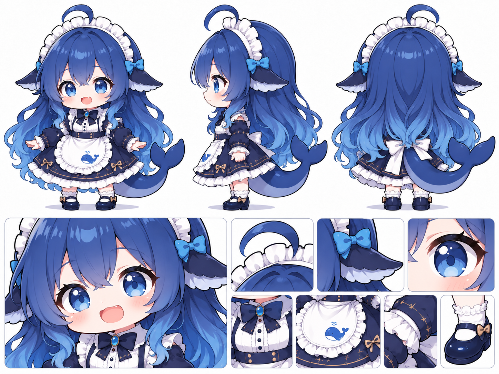

01
Q 版大肥鱼
Q 版蓝色鲸鱼娘，大头小身材，约三头身的圆润比例，头部、蓬松的长发和向外展开的裙摆构成柔软饱满的轮廓。头发以深海蓝为主色，从发根的深蓝逐渐过渡到发尾明亮的海蓝与浅青蓝；额前是层叠的斜刘海，几束短发贴着圆脸向内弯，头顶翘起一根弧形呆毛。后发浓密而修长，从肩背两侧垂下，末端散成一缕缕轻微卷曲的波浪发束。脸颊圆润，眼睛占脸部很大比例，深蓝外圈包着亮蓝虹膜，瞳孔中有大小不同的白色与浅蓝色高光；鼻子小巧，双颊透出淡粉色，嘴巴小而精致。头上戴着拱起的白色蕾丝女仆发箍，褶边层层叠叠；发箍两侧各系一枚亮蓝色小蝴蝶结。头侧有一对向两边展开的鲸鱼鳍状耳朵，外侧为深海蓝，内缘带白色波浪形褶边。身后伸出一条厚实的深蓝色鲸尾，从腰后向侧面弯起，末端分成两片圆润的尾鳍，下侧颜色渐浅并带一点蓝紫色。身穿深蓝与白色相间的女仆裙：内层白色高领衬衫有细密的纵向褶裥和深色纽扣，领口系深蓝蝴蝶结，中央是一颗金边镶嵌的椭圆蓝宝石；外层深蓝短上衣收在腰间，袖子蓬起，袖口露出白色蕾丝。腰前围着宽大的白色围裙，边缘是一圈细密荷叶边，正中印有小蓝鲸与水花图案。深蓝短裙向外撑开，裙摆下叠着多层白色花边；裙面和袖口点缀细小的金色十字星、针脚与浅金色蝴蝶结。腿上穿白色花边短袜，脚上是圆头深蓝色玛丽珍鞋，鞋面各有一枚浅金色小蝴蝶结。整体配色围绕深海蓝、钴蓝、浅海蓝与白色展开，以少量金色装饰勾勒细节。
